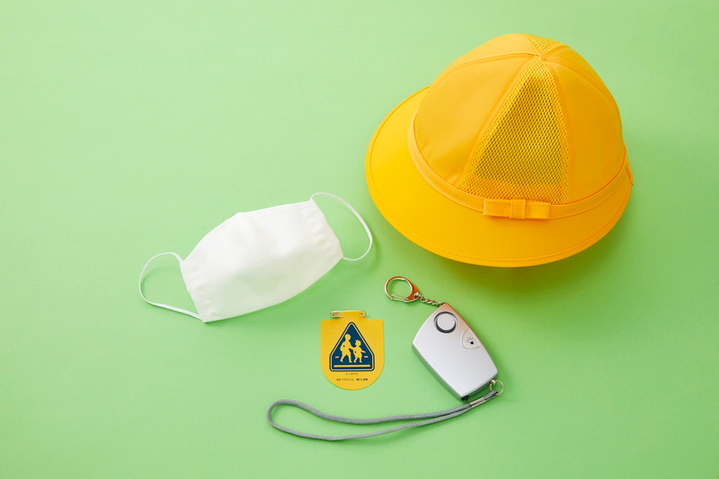

Safety
Project safety
Training, risk management, large-instrument operation, and virtual simulation.
Responsible engineering
Safety is integrated into every stage of our project
We emphasize clear operating procedures, risk awareness, appropriate training, and careful use of laboratory instruments. These practices help ensure that both experimental work and computationally guided engineering are carried out responsibly and reproducibly.
- Safety training
- Project risk management
- Large-instrument operation
- Virtual simulation
